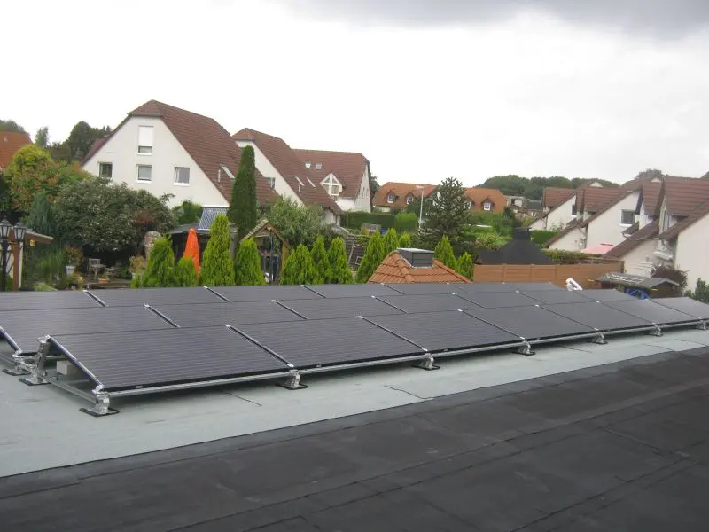

Polskie Sieci Elektroenergetyczne (PSE) published an announcement on 21 July 2026 concerning the right to compensation for non-market redispatch of photovoltaic installations on 14, 16, 18 and 19 July. This is important information for entities whose installations were covered by operator instructions, but it does not mean an automatic payment to every solar-panel owner.

7.5 kWp photovoltaic system on a flat roof — a GreenExperts project.
What does renewable energy redispatch mean?
Redispatch means changing the planned operation of an energy source at the operator's instruction. In practice, it can mean temporarily limiting generation when this is required to balance the power system safely. It is an operator measure, not an ordinary decision by the installation owner to switch off the inverter.
The PSE announcement concerned non-market redispatch. The operator identified specific days and referred to a right to compensation for installations covered by the measure in accordance with the applicable rules.
The fact that renewable generation was restricted on a given day does not in itself prove that every prosumer micro-installation is entitled to a payment.
Who should check whether compensation is available?
First and foremost, the entity that received or implemented the curtailment instruction and holds data confirming the scope of redispatch. Communications with the operator, measurement data and information about the installation's availability and planned output should be retained.
If the installation operates through an aggregator, supplier or another entity responsible for settlement, the procedure may also follow from the applicable agreement. The owner of an ordinary home micro-installation should not assume that PSE's announcement automatically triggers a payment. It must first be confirmed whether the installation was formally covered by redispatch and which procedure applies.
What does this situation tell us about designing new systems?
As the number of solar sources grows, flexible on-site use of energy becomes increasingly important. This does not mean that battery storage “solves the grid problem” in every home, but a well-sized system can shift part of consumption to generation hours or store some surplus energy.
- Match PV capacity to actual and planned consumption.
- Check when the home or business consumes the most energy.
- Before buying battery storage, analyse hourly data rather than only the annual kWh total.
- Do not base an investment decision on the assumption that compensation will be a regular source of income.
What should you do if your installation was curtailed?
Read the operator's exact announcement, retain the documentation and contact the entity that passed on the instruction or is responsible for settlement. Financial and legal matters depend on the circumstances of each case; this article is for information only.
Source
Information current as of 27 July 2026. This article is not legal advice or a guarantee that compensation will be obtained.